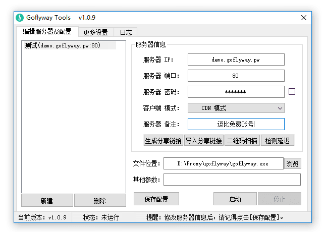
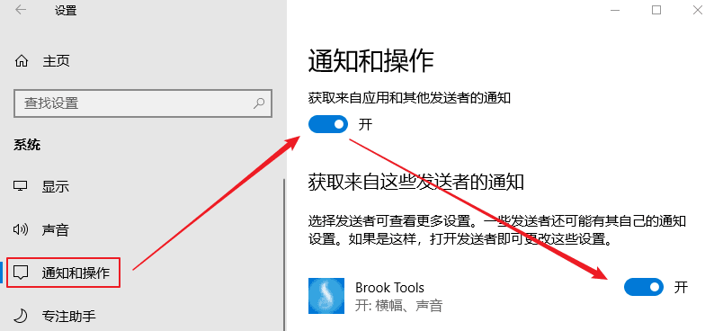

其实我在写 Brook Tools 之前，就写好了 Goflyway Tools ，但是考虑到这个软件的各平台生态太差，就改了改先出了 Brook Tools 工具，最近见到有人要我就把 Goflyway 发出来好了，目前该软件主要支持 Windows Linux 系统，安卓系统客户端还是测试版本，IOS短时间别指望了。
Goflyway Linux 一键脚本：『原创』Go语言轻量化 HTTP Tunnel 代理工具 —— GoFlyway 一键安装管理脚本
Goflyway Linux 手动教程：一个由Go语言编写的轻量化 HTTP Tunnel 代理工具 —— GoFlyway
其他 Goflyway 教程请看：https://doub.io/tag/goflyway/
当前版本：1.0.11
主要功能
- 支持 多服务器管理
- 支持 直连模式、PAC模式、全局模式
- 支持 生成/导入 分享链接功能（分享链接格式）
- 支持 HTTP、KCP、CDN、WebSocket 传输协议
- 支持 账号自检
- 支持 开机启动
- 等等
直连模式说明：
PAC模式、全局模式很多人能理解是什么意思，但是部分人不清楚直连模式是什么鬼，我就简单解释一下。
你们知道 PAC模式和全局模式就是软件设置了系统代理设置，然后浏览器会读取系统代理模式，比如访问谷歌，会判断PAC内是否有谷歌域名，如果有就走代理，如果没有就直连，而全局模式则是所有网站走代理。
而直连模式则代表不设置系统代理模式，选择后会初始化系统代理设置。然后就需要在相应软件中配置代理服务器 HTTP协议 127.0.0.1 8100(默认)，这样相应软件才会走代理，例如 Chrome 浏览器代理管理扩展 SwitchyOmega（点击查看新手使用教程）。
截图展示

使用方法
本软件是一个辅助软件（可视化UI操作），他无法独立使用，需要配合 Goflyway Windows命令行版客户端使用。
所以要使用该软件请先下载 Goflyway Windows命令行版客户端：逗比云地址 、Github地址（请选择 goflyway_windows_386.zip 或 goflyway_windows_amd64.zip）。
为了方便大家使用，我把32位和64位的命令行版客户端都集成在压缩包内了，打开软件后选择相应的命令行版客户端即可（官方命令行版客户端可能会更新，到时间请手动更新或提醒我更新压缩包）。
下载 Goflyway Windows命令行版客户端后，放置到任何位置（路径中不能包含中文和空格，否则PAC失效）- 下载 Goflyway Tools 客户端文件，解压后放置到任何位置，并运行软件。
- 运行软件后填写 Goflyway 账号或者导入 Goflyway 分享链接，并点击 浏览 按钮，选择命令行版客户端文件（拖拽文件到软件窗口中）。
- 点击 启动 按钮（或者右键托盘菜单 - 启动）。
- 根据需求在 托盘菜单 - 代理模式 中可以选择 直连模式、PAC模式（默认）、全局模式。
无法使用？请先使用 [账号自检] 功能检测账号是否可用。
如果提示可用，那么请尝试 检查系统代理设置(点击看教程)！
如果账号不可用，那么可以试试我 免费分享的 Goflyway 账号！
下载地址
注意：每次更新最新版本时，因为微软审核需要一天左右的时候，所以这期间 Windows Defender 会报毒，请选择信任或者等待两天后再用。
更新内容
2018年09月28日，版本 v1.0.11
1. 新增 KCP传输协议。
2. 新增 分享链接支持包含账号协议、备注内容。
3. 新增 自定义日志级别。
4. 新增 支持自定义命令行客户端文件名（不再固定为 goflyway.exe）。
5. 新增 各输入框都添加了提示说明文本（鼠标指向输入框）。
6. 修改 客户端模式 相关文字为 客户端协议。
7. 修改 客户端协议中的 [无(默认模式)] 文字为 [HTTP模式] 。
分享链接格式为：Base64加密(IP:端口@Base64(密码):协议@备注)
Base64 加密均为URL保护模式：去除空格和等号(=)，替换加号(+)为减号(-)，替换斜杠(/)为下划线(_)。
注意事项
- 该软件仅支持 Windows 系统，至于 Linux 和 Mac 用户...（ 啦啦啦~）
- Windows 7 及以后的系统如无法使用部分功能，请 [以管理员身份运行]。
- 该软件由 E语言 编写(重拾初中姿势)，所以部分杀毒软件可能报毒，我原创的软件绝对没有病毒！
其他说明
分享链接格式
分享链接格式为：Base64加密(IP:端口@Base64(密码):协议@备注)
Base64 加密均为URL保护模式：去除空格和等号(=)，替换加号(+)为减号(-)，替换斜杠(/)为下划线(_)。
无法连接到 Goflyway 账号的可能原因之一
因为 Goflyway 每次更新的内容可能变动较大，所以如果客户端与服务端版本不一致，那么很有可能会导致客户端链接服务端被拒绝。包括我的 Goflyway Tools 里调用的 Windows 命令行版客户端，所以请尝试更新服务端或客户端为最新版本。
账号自检失败，可能的原因 一
Windows 防火墙阻挡代理软件。
关于 CDN模式 WebSocket 模式 与 服务端之间关系 的说明
为了避免大家迷茫或者误解，所以我对 客户端模式与服务端之间关系说明一下：
Windows 10 系统不显示启动/停止/账号自检等通知信息
这个问题一般是因为 Windows 10 系统的通知被关闭导致的，请去控制面板 - 通知和操作 - 开启 获取来自应用和其他发送者的通知 。
懒得截图，图片用的是 Brook Tools 文章里的，不要在意~

有问题或者反馈BUG（需提供可复现步骤）请在下面留言！
转载请超链接注明：逗比根据地 » 『原创』更方便的Windows系统 Goflyway 客户端 —— GoFlyway Tools
责任声明：本站一切资源仅用作交流学习，请勿用作商业或违法行为！如造成任何后果，本站概不负责！


DNS泄露是 Goflyway 自身问题，我已经向作者反馈了。
服务器与本地设备的系统时间一致吗？
我看你用的是我的免费账号，你用的 Goflyway 命令行客户端 是最新版本吗？
账号自检通过的话，说明你电脑还是能用该账户的，应该是浏览器代理设置方面的问题，Chrome 浏览器的话建议用这个扩展管理代理设置。
至于时间一致性，就是看你的设备时间是不是北京标准时间。
代理速度取决于你与服务器之间的网络链接质量 以及代理软件的传输效率 和 运营商的QOS限速情况。
我更新前测试过 WIN10 是可以正常开机启动并启动代理的。
但是我浏览器依然能翻墙，能访问谷歌什么的，所以应该只是这个网站检测代码逻辑什么的问题。
要么账号有问题。 - 我的免费账号是正常的，当然偶尔会抽风一下，所以你要多试几次确保不是账号问题。
要么客户端运行有问题。 - 这个往往是本地监听端口出问题了，CMD里运行
netstat -aon|findstr 8100来看看是不是端口监听有问题。要么本地网络或者本地与代理服务器的网络链接有问题。 - 这个的话，你就需要用 Ping 和 TCPing 来测试下，你与代理服务器直接的连通性了。
评论里说不清，请 Telegram群组(TG使用教程)私聊联系我讨论解决。
客户端不开源。怀疑有后门可以选择不用，该软件不是必需品只是会让客户端操作更方便而已。
SS SSR客户端都是内建了一个HTTP服务，把 PAC 脚本放里面，实现 在线PAC 的效果。
而Win10 的 IE 和 Edge 不支持本地PAC方式，所以无法使用，用其他浏览器就行。
威胁定义版本：1.269.28.0，今天更新的。
Goflyway 进阶教程：免费域名+免费CDN+HTTP伪装=被墙的IP继续做代理